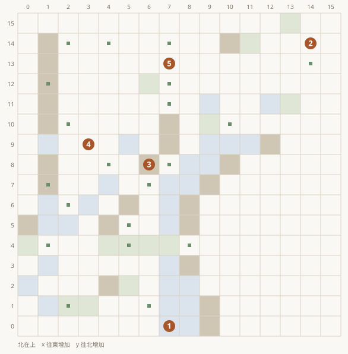
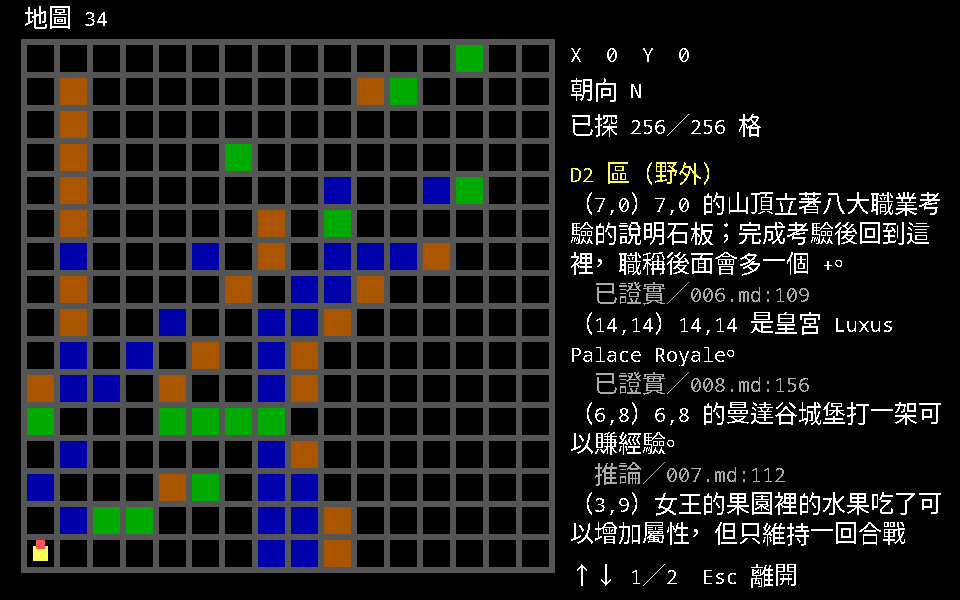

開局與通用規則
這一頁是不綁定地點的規則：八大職業考驗、三重冠、主線的順序，以及幾條會影響全程的 物品與戰鬥慣例。詳細的機制去說明書那半邊查，這裡只講 《軟體世界》寫了什麼。
主線大致的順序
雜誌沒有列過一份完整的流程表，以下是把散在六期裡的條件串起來的結果。 每一步的前置條件都寫在該地點那一節，這裡只給順序。
- 八大職業考驗。八個目標分散在野外與地下城，位置刻在 2 號城亞特蘭汀的八座石像上。
通過的人職稱後面會多一個
+。 - 三重冠（Triple Crown）。在 2 號城買三張 Black Ticket，依序打 1 號城的 Arena、 5 號城的 Monster Bowl、2 號城的 Coloseum。
- 見拉曼達公主（D2-14,14 的皇宮）。她要求隊員的職稱有
+，而且贏過三重冠。 三場全勝後封你為 Chosen One。 - 救卡隆王。用 Castle Pinehurst 的時光機回到 800 年，在 C2-14,8 的 Xabran 城堡 拿四個元素之碟。
- 四大元素界。把碟插進祭壇取得四隻元素之爪。
- 最後地下城（C2-10,7）。要先完成公主的任務才進得去；終點是控制室的三道關卡。
八大職業考驗
每種職業一項考驗，通過可得五百萬經驗點數，職稱後面多一個 + 記號。
八個考驗的正確方位刻在 2 號城亞特蘭汀的八座石像上（那八則訊息在
五座城那一頁抄了全文）。
| 職業 | 目標 | 位置 |
|---|---|---|
| 武士 | 恐怖武士 Dread Knight | B3-5,14 |
| 弓箭手 | 威福瑞男爵 Baron Wilfrey | B2-11,2 |
| 野蠻人 | 布魯諾酋長 Brutal Bruno | C4-0,15 |
| 忍者 | 黎明 Therixen Dawn | D4-8,9 |
| 牧師 | 科諾克之魂 Corak's Soul | C1-10,15 |
| 遊俠 | 霜龍 Frost Dragon | 森林禁地 8,8（入口 C3-15,0） |
| 巫師 | 救出善良巫師 Yekop | 善良巫師之塔（入口 B4-4,10） |
| 賊 | 沒有自己的考驗 | 跟著別人做 |
三條規則跟著考驗走：
- 考驗期間隊伍裡只能有受試者本人與賊，其他職業的人不得幫助。
- 賊沒有自己的考驗，但必須跟著其他職業的人完成任務。
- 通過考驗之後去訓練場，大約可以升到接近 20 級。
石板本身在 D2-7,0 的山頂；完成考驗後回到那裡，職稱後面才會加上 +。

MAP.DAT ＋ ATTRIB.DAT 畫出
地圖 34 可通行 192 格、山區 23、森林 13、水域 28、事件格 24
- 17,07,0 的山頂立著八大職業考驗的說明石板；完成考驗後回到這裡，職稱後面會多一個 +。已證實／006.md:109
- 214,1414,14 是皇宮 Luxus Palace Royale。已證實／008.md:156
- 36,86,8 的曼達谷城堡打一架可以賺經驗。推論／007.md:112
- 43,9女王的果園裡的水果吃了可以增加屬性，但只維持一回合戰鬥；3,9 那顆會石化。推論／007.md:112
- 57,137,13 有個老瘋子，要帶 Cupie Doll 給他才會講重要情報（區域見衝突表）。推論／008.md:87
- 沒有座標的提示
- 吃完水果可以去找守衛打架賺經驗。推論／007.md:112
- 大部份是荒涼沙漠。推論／007.md:136
三重冠
拉曼達公主的另一個條件。做法是：
- 到 2 號城亞特蘭汀買三張 Black Ticket。
- 打 1 號城米德格特的 Arena。
- 打 5 號城桑德索巴的 Monster Bowl。
- 打 2 號城亞特蘭汀的 Coloseum。最後這場的怪物相當強。
每場之後存檔。Castle Pinehurst 裡有一則訊息把這件事寫得很完整：
To Win The Queen's triple Crown, take a black Ticket to the Arena, Monster Bowl, and Colosseum, after victory has been achieved, return for your reward
城堡與主教
- 每座城堡都關著一位不同顏色的主教，與拉曼達公主的任務有關。
- 每座城堡共三層。地下兩層除了少數可增加屬性的寶物之外沒什麼用，而且職業與種族限制很多。
已知的四位：森林天堂城堡關綠主教、海爾斯通城堡關紅主教、Castle Pinehurst 關黃主教、 皇宮關黑主教。
馬戲團加屬性
一條可以重複做的流程，全隊某項屬性 +10，上限 100：
- 到 B2-14,4 的馬戲團，每年第 140–170 天才開張。玩贏拿到俏皮娃娃（Cupie Doll）。
- 傳送到 D2-7,13 找瘋老頭，把娃娃給他。
- 到 E3-10,12 泡泉水。
- 回馬戲團再玩一次。
- 睡一覺。
順序不能顛倒：沒先把娃娃給瘋老頭就泡進 E3-10,12 那個泉水，會損失背袋裡所有物品。 瘋老頭在 D2 還是 D3，雜誌自己前後不一，見矛盾與勘誤。
物品與戰鬥慣例
- 移動手段是 Witch Broom 或巫師 3-2 法術。MM2 裡沒有魔毯。
第 006 期寫過「利用飛毯飛到 B3」，第 008 期作者自行更正。
巫師 3-2 就是飛行術（Fly），這一條在
data/spells.json上對得到。 - 戰鬥中的 USE 指令可以發動物品或武器上的法術，不耗 SP。 放在背包裡會扣一次使用次數，裝備著則不會。
- Star Bow 可以施 Star Burst，不耗法力與寶石，只有使用次數限制。 雜誌的做法是留一把原版放在旅店的特別隊員身上，用光再回去複製。
- Star Bow、Meteo Bow 只能在室外用；Thunder Sword 一次打 4 個目標、Lich Hand 3 個。
- 很多怪物不怕 Energy、Fire、Cold、Electric，但很少有怪物不怕 Dancing Sword。
- 怪物的強度會隨隊伍強弱調整。隊伍愈強，遇到的怪物愈兇也愈多。
一個會壞檔的雷
經驗值累積超過程式容許值會出現怪現象：男隊員變成女的、部份屬性歸零、陣線改變。 雜誌沒有寫上限是多少。這一條值得記住，因為八大考驗每項給五百萬、 最後控制室給每人五千萬，數字很容易衝上去。
元素界
- 把元素之碟插進對應的祭壇就能取得元素之爪。元素之王要不要打隨你。
- 從元素界回到原本的世界，方法一樣是一直用 Rest 休息。
四界的入口與祭壇座標在元素界與結局。